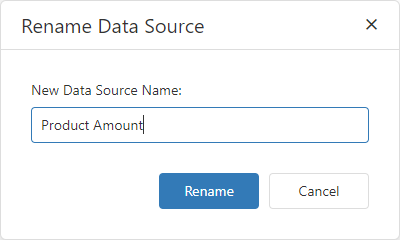

Manage Data Sources
You can add a new data source to the current dashboard or remove existing data sources. To do this, open the dashboard menu and go to the Data Sources page.
Add a Data Source
To add a new data source, click Add next to the Used Data Sources list.

The Add Data Source window appears.

The window allows you to do the following:
| Action | Description |
|---|---|
| Add an existing data source | Select the data source and click the Add button. |
| Create a new data source | Click Create data source.... It invokes the Dashboard Data Source Wizard where you can create a new data source based on the predefined data connection. Then click Add to add the newly created data source to the dashboard data sources. |
You can find the newly added data source in the Used Data Sources list.
Manage Data Sources
Select a data source to manage it:

Click the Rename button ( ) to rename the selected data source. The Rename Data Source dialog appears and you can enter a new name:
) to rename the selected data source. The Rename Data Source dialog appears and you can enter a new name:

To remove an existing data source, select it and click Remove ( ).
).